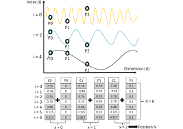
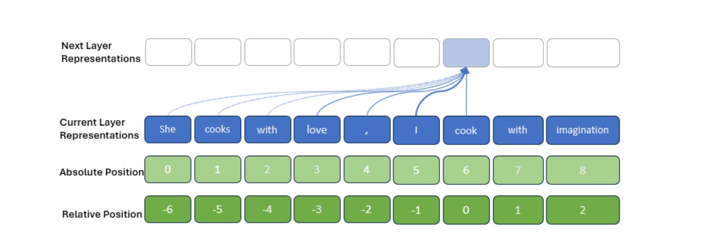
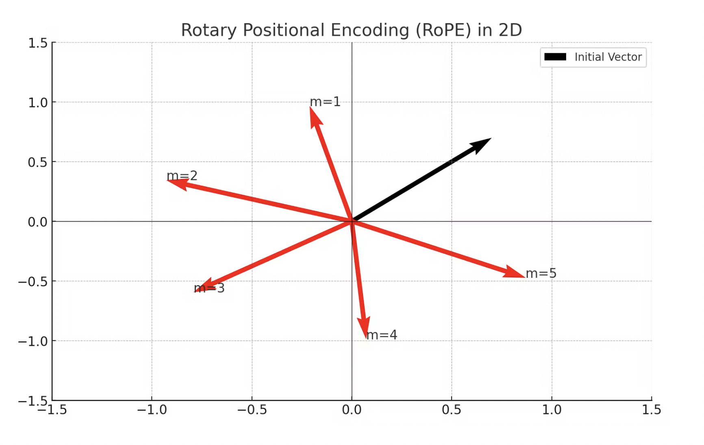
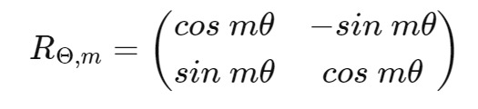
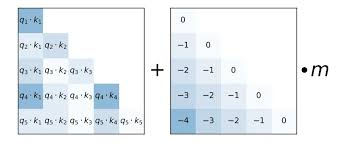

Absolute Position Encoding is a method of incorporating positional information into transformer models by assigning a unique vector to each position in the sequence. This approach allows the model to distinguish between tokens based on their absolute position within the input.
This is the method used in the original Transformer paper.
For position and dimension :
This method involves learning a unique embedding for each position.
, where is a learned embedding table
This method uses algebraic formulations to create position encodings.
This method represents positions using their binary representations.
Here's a comprehensive implementation of Absolute Position Encoding, including visualization:
import torch
import torch.nn as nn
import matplotlib.pyplot as plt
import seaborn as sns
import numpy as np
class MultiMethodAbsolutePositionalEncoding(nn.Module):
def __init__(self, d_model, max_seq_len=5000, dropout=0.1, method='sinusoidal'):
super().__init__()
self.d_model = d_model
self.dropout = nn.Dropout(p=dropout)
self.max_seq_len = max_seq_len
self.method = method
if method == 'sinusoidal':
self.pe = self._sinusoidal_encoding()
elif method == 'learned':
self.pe = nn.Parameter(torch.randn(1, max_seq_len, d_model))
elif method == 'algebraic':
self.pe = self._algebraic_encoding()
elif method == 'binary':
self.pe = self._binary_encoding()
else:
raise ValueError(f"Unknown encoding method: {method}")
def _sinusoidal_encoding(self):
pe = torch.zeros(self.max_seq_len, self.d_model)
position = torch.arange(0, self.max_seq_len, dtype=torch.float).unsqueeze(1)
div_term = torch.exp(torch.arange(0, self.d_model, 2).float() * (-np.log(10000.0) / self.d_model))
pe[:, 0::2] = torch.sin(position * div_term)
pe[:, 1::2] = torch.cos(position * div_term)
return pe.unsqueeze(0)
def _algebraic_encoding(self):
pe = torch.zeros(self.max_seq_len, self.d_model)
position = torch.arange(0, self.max_seq_len, dtype=torch.float).unsqueeze(1)
for i in range(self.d_model):
pe[:, i] = position.squeeze() / (self.max_seq_len - 1) ** (i / (self.d_model - 1))
return pe.unsqueeze(0)
def _binary_encoding(self):
pe = torch.zeros(self.max_seq_len, self.d_model)
for pos in range(self.max_seq_len):
for i in range(min(self.d_model, len(bin(self.max_seq_len)) - 2)):
pe[pos, i] = (pos >> i) & 1
return pe.unsqueeze(0)
def forward(self, x):
x = x + self.pe[:, :x.size(1)]
return self.dropout(x)
class AbsolutePositionAttention(nn.Module):
def __init__(self, d_model, num_heads, dropout=0.1, max_seq_len=5000, method='sinusoidal'):
super().__init__()
self.d_model = d_model
self.num_heads = num_heads
self.pos_encoding = MultiMethodAbsolutePositionalEncoding(d_model, max_seq_len, dropout, method)
self.q_proj = nn.Linear(d_model, d_model)
self.k_proj = nn.Linear(d_model, d_model)
self.v_proj = nn.Linear(d_model, d_model)
self.out_proj = nn.Linear(d_model, d_model)
self.dropout = nn.Dropout(dropout)
def forward(self, x):
batch_size, seq_len, _ = x.shape
# Add positional encoding to input
x = self.pos_encoding(x)
q = self.q_proj(x).view(batch_size, seq_len, self.num_heads, -1).transpose(1, 2)
k = self.k_proj(x).view(batch_size, seq_len, self.num_heads, -1).transpose(1, 2)
v = self.v_proj(x).view(batch_size, seq_len, self.num_heads, -1).transpose(1, 2)
attn = (q @ k.transpose(-2, -1)) / (self.d_model ** 0.5)
attn = self.dropout(attn.softmax(dim=-1))
out = (attn @ v).transpose(1, 2).reshape(batch_size, seq_len, self.d_model)
return self.out_proj(out)
def visualize_positional_encoding(self, seq_len=100):
pos_enc = self.pos_encoding.pe[:, :seq_len, :].squeeze().detach().cpu().numpy()
plt.figure(figsize=(12, 6))
sns.heatmap(pos_enc, cmap='coolwarm')
plt.title(f"Absolute Positional Encoding ({self.pos_encoding.method})")
plt.xlabel("Encoding Dimension")
plt.ylabel("Position")
plt.show()
plt.figure(figsize=(12, 6))
for i in range(0, pos_enc.shape[1], pos_enc.shape[1]//10):
plt.plot(pos_enc[:, i], label=f'Dim {i}')
plt.title(f"Absolute Positional Encoding Components ({self.pos_encoding.method})")
plt.xlabel("Position")
plt.ylabel("Encoding Value")
plt.legend()
plt.show()
if __name__ == "__main__":
d_model = 512
num_heads = 8
max_seq_len = 1000
methods = ['sinusoidal', 'learned', 'algebraic', 'binary']
for method in methods:
print(f"\nTesting {method.capitalize()} Encoding:")
abs_pos_attn = AbsolutePositionAttention(d_model, num_heads, max_seq_len=max_seq_len, method=method)
x = torch.randn(32, 100, d_model)
output = abs_pos_attn(x)
print(f"Input shape: {x.shape}")
print(f"Output shape: {output.shape}")
abs_pos_attn.visualize_positional_encoding()
This implementation includes:
AbsolutePositionalEncoding module that generates the sinusoidal position encodingsAbsolutePositionAttention module that applies the encoding in the attention mechanismThe choice between these methods often depends on the specific requirements of the task, the model architecture, and the characteristics of the data being processed. Absolute Position Encoding is particularly well-suited for tasks where the absolute position of tokens is crucial and where a simple, deterministic encoding is preferred.

Relative Position Encoding (RPE) is a method of incorporating positional information into transformer models by encoding the relative distances between tokens rather than their absolute positions. This approach allows the model to focus on the relationships between tokens, which can be particularly useful for tasks that depend on local context or where the absolute position is less important.
There are several ways to implement Relative Position Encoding. We'll focus on two popular methods:
In this method, relative positions are clipped to a maximum distance.
For tokens at positions and :
Where:
This method uses sinusoidal functions to encode relative positions:
Where:
The attention score is then computed as:
Where and are learned vectors.
Here's a comprehensive implementation of Relative Position Encoding, including visualization:
import torch
import torch.nn as nn
import torch.nn.functional as F
import seaborn as sns
import matplotlib.pyplot as plt
import math
class RelativeGlobalAttention(nn.Module):
def __init__(self, d_model, num_heads, max_len=1024, dropout=0.1):
super().__init__()
d_head, remainder = divmod(d_model, num_heads)
if remainder:
raise ValueError(
"incompatible `d_model` and `num_heads`"
)
self.max_len = max_len
self.d_model = d_model
self.num_heads = num_heads
self.key = nn.Linear(d_model, d_model)
self.value = nn.Linear(d_model, d_model)
self.query = nn.Linear(d_model, d_model)
self.dropout = nn.Dropout(dropout)
self.Er = nn.Parameter(torch.randn(max_len, d_head))
self.register_buffer(
"mask",
torch.tril(torch.ones(max_len, max_len))
.unsqueeze(0).unsqueeze(0)
)
# self.mask.shape = (1, 1, max_len, max_len)
def forward(self, x):
batch_size, seq_len, _ = x.shape
if seq_len > self.max_len:
raise ValueError(
"sequence length exceeds model capacity"
)
k_t = self.key(x).reshape(batch_size, seq_len, self.num_heads, -1).permute(0, 2, 3, 1)
v = self.value(x).reshape(batch_size, seq_len, self.num_heads, -1).transpose(1, 2)
q = self.query(x).reshape(batch_size, seq_len, self.num_heads, -1).transpose(1, 2)
start = self.max_len - seq_len
Er_t = self.Er[start:, :].transpose(0, 1)
QEr = torch.matmul(q, Er_t)
Srel = self.skew(QEr)
QK_t = torch.matmul(q, k_t)
attn = (QK_t + Srel) / math.sqrt(q.size(-1))
mask = self.mask[:, :, :seq_len, :seq_len]
attn = attn.masked_fill(mask == 0, float("-inf"))
attn = F.softmax(attn, dim=-1)
out = torch.matmul(attn, v)
out = out.transpose(1, 2).reshape(batch_size, seq_len, -1)
return self.dropout(out), attn # Returning attention for visualization
def skew(self, QEr):
padded = F.pad(QEr, (1, 0))
batch_size, num_heads, num_rows, num_cols = padded.shape
reshaped = padded.reshape(batch_size, num_heads, num_cols, num_rows)
Srel = reshaped[:, :, 1:, :]
return Srel
def visualize_attention(self, attn, seq_len):
"""
Visualizes attention matrix for a given sequence length
Parameters:
- attn: Attention weights tensor with shape (batch_size, num_heads, seq_len, seq_len)
- seq_len: Length of the sequence
"""
# Pick the attention weights for the first head and first batch (for simplicity)
attn_weights = attn[0, 0, :, :].detach().cpu().numpy()
# Create a heatmap for the attention weights
plt.figure(figsize=(10, 8))
sns.heatmap(attn_weights, cmap='coolwarm', xticklabels=range(seq_len), yticklabels=range(seq_len))
plt.title('Attention Weights Visualization')
plt.xlabel('Key Positions')
plt.ylabel('Query Positions')
plt.show()
if __name__ == "__main__":
seq_len = 10
d_model = 64
num_heads = 4
model = RelativeGlobalAttention(d_model=d_model, num_heads=num_heads, max_len=1024)
x = torch.randn(1, seq_len, d_model)
out, attn = model(x)
model.visualize_attention(attn, seq_len)
The choice between these methods depends on the specific task, model architecture, and computational constraints. Relative Position Encoding is particularly well-suited for tasks where the relationships between tokens are more important than their absolute positions, and where generalization to different sequence lengths is crucial.

RoPE, or Rotary Position Embedding, is a method of incorporating positional information into transformer models by applying rotation matrices to token embeddings. Introduced by Su et al. in 2021, RoPE aims to combine the benefits of absolute and relative position encoding while maintaining computational efficiency.
Let's define RoPE mathematically:
For a complex-valued vector where each is a complex number, we define a rotation operation:
Where is the position index, and , with and being hyperparameters.
In practice, for real-valued vectors, this rotation is implemented as:
Sample Rotary Matrix:

In the attention mechanism, for query and key at positions and respectively:
Unified absolute and relative encoding: RoPE naturally captures both absolute and relative position information.
Flexibility: Can be easily integrated into existing transformer architectures with minimal changes.
Theoretical properties: Preserves the linear self-attention formulation while encoding position information.
Efficiency: Computationally efficient, as it can be implemented with simple matrix operations.
Extrapolation: Demonstrates good performance on sequences longer than those seen during training.
Rotation generation: For each position, generate a rotation matrix based on the position and a set of frequencies.
Embedding rotation: Apply these rotations to the query and key vectors in the attention mechanism.
Attention computation: Compute attention scores using the rotated vectors. The resulting dot products naturally encode relative position information.
Training: The model learns to utilize this rotated space during the training process.
Here's a comprehensive implementation of RoPE, including visualization:
import torch
import torch.nn as nn
import matplotlib.pyplot as plt
import seaborn as sns
import numpy as np
class RotaryPositionalEmbedding(nn.Module):
def __init__(self, d_model, max_seq_len=5000, base=10000):
super().__init__()
self.d_model = d_model
inv_freq = 1. / (base ** (torch.arange(0, d_model, 2).float() / d_model))
self.register_buffer('inv_freq', inv_freq)
self.max_seq_len = max_seq_len
def forward(self, positions):
sinusoid_inp = torch.einsum("i,j->ij", positions.float(), self.inv_freq)
emb = torch.cat((sinusoid_inp.sin(), sinusoid_inp.cos()), dim=-1)
return emb
def rotate_half(x):
x1, x2 = x[..., :x.shape[-1]//2], x[..., x.shape[-1]//2:]
return torch.cat((-x2, x1), dim=-1)
class RotaryAttention(nn.Module):
def __init__(self, d_model, num_heads, max_seq_len=5000):
super().__init__()
self.d_model = d_model
self.num_heads = num_heads
head_dim = d_model // num_heads
self.head_dim = head_dim
self.rotary_emb = RotaryPositionalEmbedding(head_dim, max_seq_len)
self.q_proj = nn.Linear(d_model, d_model)
self.k_proj = nn.Linear(d_model, d_model)
self.v_proj = nn.Linear(d_model, d_model)
self.out_proj = nn.Linear(d_model, d_model)
def forward(self, x):
batch_size, seq_len, _ = x.shape
q = self.q_proj(x).view(batch_size, seq_len, self.num_heads, self.head_dim).transpose(1, 2)
k = self.k_proj(x).view(batch_size, seq_len, self.num_heads, self.head_dim).transpose(1, 2)
v = self.v_proj(x).view(batch_size, seq_len, self.num_heads, self.head_dim).transpose(1, 2)
positions = torch.arange(seq_len, device=x.device)
rot_emb = self.rotary_emb(positions)
q_rot = (q * rot_emb.cos()) + (rotate_half(q) * rot_emb.sin())
k_rot = (k * rot_emb.cos()) + (rotate_half(k) * rot_emb.sin())
attn = (q_rot @ k_rot.transpose(-2, -1)) / (self.head_dim ** 0.5)
attn = attn.softmax(dim=-1)
out = (attn @ v).transpose(1, 2).reshape(batch_size, seq_len, self.d_model)
return self.out_proj(out)
def visualize_rotary_embeddings(self, seq_len=20):
positions = torch.arange(seq_len)
rot_emb = self.rotary_emb(positions).detach().cpu().numpy()
plt.figure(figsize=(12, 6))
plt.subplot(1, 2, 1)
sns.heatmap(rot_emb[:, :self.head_dim//2], cmap='coolwarm')
plt.title("Sine Component of RoPE")
plt.xlabel("Dimension")
plt.ylabel("Position")
plt.subplot(1, 2, 2)
sns.heatmap(rot_emb[:, self.head_dim//2:], cmap='coolwarm')
plt.title("Cosine Component of RoPE")
plt.xlabel("Dimension")
plt.ylabel("Position")
plt.tight_layout()
plt.show()
if __name__ == "__main__":
d_model = 512
num_heads = 8
max_seq_len = 1000
rope_attn = RotaryAttention(d_model, num_heads, max_seq_len)
x = torch.randn(32, 100, d_model)
output = rope_attn(x)
print(f"Input shape: {x.shape}")
print(f"Output shape: {output.shape}")
rope_attn.visualize_rotary_embeddings()
This implementation includes:
RotaryPositionalEmbedding module that generates the rotary embeddingsRotaryAttention module that applies RoPE in the attention mechanismMixture Position Encoding is an approach that combines multiple position encoding methods to capture different aspects of positional information. In this guide, we'll focus on a mixture of Absolute Position Encoding and Relative Position Encoding (RPE). This combination aims to leverage the strengths of both methods:
Let's define the Mixture Position Encoding mathematically:
For a sequence of length , we define the position encoding for position as:
Where:
We'll use the sinusoidal encoding from the original Transformer paper:
Where is the position and is the dimension.
We'll use a learned relative position encoding:
Where is a learned embedding table, and represents the relative distance between positions and .
Here's a comprehensive implementation of Mixture Position Encoding, including visualization:
import torch
import torch.nn as nn
import matplotlib.pyplot as plt
import seaborn as sns
import numpy as np
class MixturePositionalEncoding(nn.Module):
def __init__(self, d_model, max_seq_len=5000, dropout=0.1):
super().__init__()
self.d_model = d_model
self.max_seq_len = max_seq_len
self.dropout = nn.Dropout(p=dropout)
# Absolute position encoding
pe = torch.zeros(max_seq_len, d_model)
position = torch.arange(0, max_seq_len, dtype=torch.float).unsqueeze(1)
div_term = torch.exp(torch.arange(0, d_model, 2).float() * (-np.log(10000.0) / d_model))
pe[:, 0::2] = torch.sin(position * div_term)
pe[:, 1::2] = torch.cos(position * div_term)
pe = pe.unsqueeze(0)
self.register_buffer('pe', pe)
# Relative position encoding
self.relative_position_embedding = nn.Embedding(2 * max_seq_len - 1, d_model)
# Mixture parameter
self.alpha = nn.Parameter(torch.tensor(0.5))
def forward(self, x):
seq_len = x.size(1)
# Absolute position encoding
absolute_pe = self.pe[:, :seq_len]
# Relative position encoding
relative_pos = torch.arange(-seq_len + 1, seq_len, device=x.device).unsqueeze(0)
relative_pe = self.relative_position_embedding(relative_pos + self.max_seq_len - 1)
# Mix absolute and relative encodings
mixed_pe = self.alpha * absolute_pe + (1 - self.alpha) * relative_pe[:, :seq_len]
return self.dropout(mixed_pe)
class MixtureAttention(nn.Module):
def __init__(self, d_model, num_heads, dropout=0.1, max_seq_len=5000):
super().__init__()
self.d_model = d_model
self.num_heads = num_heads
self.max_seq_len = max_seq_len
self.pos_encoding = MixturePositionalEncoding(d_model, max_seq_len, dropout)
self.q_proj = nn.Linear(d_model, d_model)
self.k_proj = nn.Linear(d_model, d_model)
self.v_proj = nn.Linear(d_model, d_model)
self.out_proj = nn.Linear(d_model, d_model)
self.dropout = nn.Dropout(dropout)
def forward(self, x):
batch_size, seq_len, _ = x.shape
pos_enc = self.pos_encoding(x)
# Add positional encoding to input
x = x + pos_enc
q = self.q_proj(x).view(batch_size, seq_len, self.num_heads, -1).transpose(1, 2)
k = self.k_proj(x).view(batch_size, seq_len, self.num_heads, -1).transpose(1, 2)
v = self.v_proj(x).view(batch_size, seq_len, self.num_heads, -1).transpose(1, 2)
attn = (q @ k.transpose(-2, -1)) / (self.d_model ** 0.5)
attn = self.dropout(attn.softmax(dim=-1))
out = (attn @ v).transpose(1, 2).reshape(batch_size, seq_len, self.d_model)
return self.out_proj(out)
def visualize_positional_encoding(self, seq_len=100):
pos_enc = self.pos_encoding(torch.zeros(1, seq_len, self.d_model)).squeeze().detach().cpu().numpy()
plt.figure(figsize=(12, 6))
sns.heatmap(pos_enc, cmap='coolwarm')
plt.title(f"Mixture Positional Encoding (α={self.pos_encoding.alpha.item():.2f})")
plt.xlabel("Encoding Dimension")
plt.ylabel("Position")
plt.show()
plt.figure(figsize=(12, 6))
for i in range(0, pos_enc.shape[1], pos_enc.shape[1]//10):
plt.plot(pos_enc[:, i], label=f'Dim {i}')
plt.title(f"Mixture Positional Encoding Components (α={self.pos_encoding.alpha.item():.2f})")
plt.xlabel("Position")
plt.ylabel("Encoding Value")
plt.legend()
plt.show()
# Usage example
d_model = 512
num_heads = 8
max_seq_len = 1000
mixture_attn = MixtureAttention(d_model, num_heads, max_seq_len=max_seq_len)
# Simulate input
x = torch.randn(32, 100, d_model) # Batch of 32, sequence length 100
output = mixture_attn(x)
print(f"Input shape: {x.shape}")
print(f"Output shape: {output.shape}")
print(f"Mixture parameter α: {mixture_attn.pos_encoding.alpha.item():.4f}")
# Visualize the mixture positional encoding
mixture_attn.visualize_positional_encoding()
This implementation includes:
MixturePositionalEncoding module that generates the mixed absolute and relative position encodingsMixtureAttention module that applies the mixed encoding in the attention mechanismThe choice between these methods often depends on the specific requirements of the task, the model architecture, and the characteristics of the data being processed.

Attention with Linear Biases (ALiBi) is a novel approach to incorporating positional information in transformer models. Unlike traditional positional encoding methods, ALiBi introduces a simple yet effective bias term in the attention mechanism. This method aims to improve the model's ability to handle longer sequences and generalize to unseen sequence lengths.
ALiBi modifies the standard attention mechanism by adding a linear bias term to the attention scores. The ALiBi attention is defined as:
Where:
The slope for each head is calculated as:
Where is the total number of heads and is the head index (0-indexed).
Here's a comprehensive implementation of ALiBi, including visualization:
import torch
import torch.nn as nn
import matplotlib.pyplot as plt
import seaborn as sns
class ALiBiAttention(nn.Module):
def __init__(self, d_model, num_heads, dropout=0.1):
super().__init__()
self.d_model = d_model
self.num_heads = num_heads
self.head_dim = d_model // num_heads
self.q_proj = nn.Linear(d_model, d_model)
self.k_proj = nn.Linear(d_model, d_model)
self.v_proj = nn.Linear(d_model, d_model)
self.out_proj = nn.Linear(d_model, d_model)
self.dropout = nn.Dropout(dropout)
# Calculate ALiBi slopes
m = torch.arange(1, self.num_heads + 1)
m = 1.0 / (2 ** (8 * m / self.num_heads))
self.register_buffer("m", m.view(1, self.num_heads, 1, 1))
def forward(self, x):
batch_size, seq_len, _ = x.shape
q = self.q_proj(x).view(batch_size, seq_len, self.num_heads, self.head_dim).transpose(1, 2)
k = self.k_proj(x).view(batch_size, seq_len, self.num_heads, self.head_dim).transpose(1, 2)
v = self.v_proj(x).view(batch_size, seq_len, self.num_heads, self.head_dim).transpose(1, 2)
# Calculate attention scores
attn_scores = (q @ k.transpose(-2, -1)) / (self.head_dim ** 0.5)
# Add ALiBi bias
alibi_bias = -torch.abs(torch.arange(seq_len, device=x.device).unsqueeze(0) - torch.arange(seq_len, device=x.device).unsqueeze(1))
alibi_bias = self.m * alibi_bias.unsqueeze(0).unsqueeze(0)
attn_scores = attn_scores + alibi_bias
attn_weights = self.dropout(attn_scores.softmax(dim=-1))
out = (attn_weights @ v).transpose(1, 2).reshape(batch_size, seq_len, self.d_model)
return self.out_proj(out)
def visualize_alibi_bias(self, seq_len=100):
alibi_bias = -torch.abs(torch.arange(seq_len).unsqueeze(0) - torch.arange(seq_len).unsqueeze(1)) # Shape: (seq_len, seq_len)
# Reshape alibi_bias to (1, seq_len, seq_len) for broadcasting
alibi_bias = alibi_bias.unsqueeze(0) # Shape: (1, seq_len, seq_len)
# Expand m to match the shape for broadcasting: (num_heads, 1, 1)
m_expanded = self.m.squeeze().unsqueeze(1).unsqueeze(2) # Shape: (num_heads, 1, 1)
# Now broadcast properly
alibi_bias = m_expanded * alibi_bias # Shape: (num_heads, seq_len, seq_len)
fig, axes = plt.subplots(2, 4, figsize=(20, 10))
fig.suptitle("ALiBi Bias for Different Attention Heads")
for i, ax in enumerate(axes.flat):
if i < self.num_heads:
sns.heatmap(alibi_bias[i].detach().cpu().numpy(), ax=ax, cmap='coolwarm')
ax.set_title(f"Head {i + 1}")
ax.set_xlabel("Query Position")
ax.set_ylabel("Key Position")
else:
ax.axis('off')
plt.tight_layout()
plt.show()
plt.figure(figsize=(12, 6))
for i in range(self.num_heads):
plt.plot(alibi_bias[i, seq_len // 2], label=f'Head {i + 1}') # Plot for the middle query position
plt.title("ALiBi Bias for Different Heads (Middle Query)")
plt.xlabel("Key Position")
plt.ylabel("Bias Value")
plt.legend()
plt.show()
if __name__ == "__main__":
d_model = 512
num_heads = 8
alibi_attn = ALiBiAttention(d_model, num_heads)
x = torch.randn(32, 100, d_model)
output = alibi_attn(x)
print(f"Input shape: {x.shape}")
print(f"Output shape: {output.shape}")
alibi_attn.visualize_alibi_bias()
This implementation includes:
ALiBiAttention module that implements the ALiBi attention mechanismThe choice between these methods depends on the specific requirements of the task, the model architecture, and the characteristics of the data being processed. ALiBi shines in scenarios where simplicity, efficiency, and the ability to handle variable-length sequences are crucial.